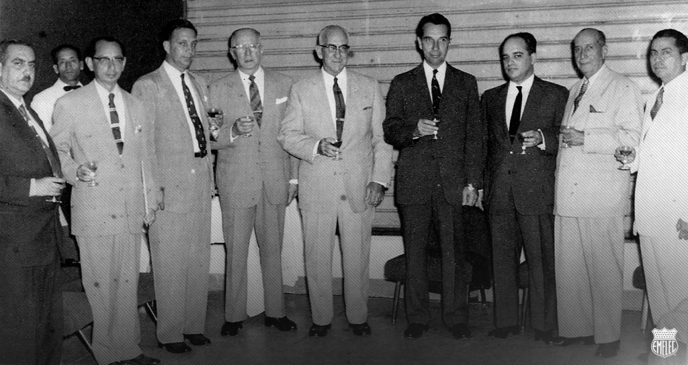
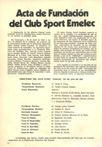

 UN CLUB ILUMINADO POR EL TRIUNFO
Enclavado en el corazón del Astillero, ese tradicional y antiguo barrio guayaquileño donde se
construían los barcos y forjado en las entrañas de la Empresa Eléctrica del Ecuador, la dueña de
la energía y la luz, esa luz que irradia solo a los grandes, un 28 de abril de 1929, hace ya 84
años, nació el Club Sport Emelec para iluminar el firmamento deportivo ecuatoriano y constituirse
en el paso del tiempo como una de las instituciones más gloriosas de nuestra patria.
El nacimiento oficial del club, se debe a un hombre visionario que con el
paso de los años se convirtió en inmortal en la historia del Club, el legendario
deportista y dirigente, George Lewis Capwell. integrante de la Superintendencia
de la Empresa Eléctrica de Ecuador, EMELEC. Club que no tuvo vida oficial pues jamás fue registrado
como tal en la Federación Deportiva del Guayas, ni tenía personería jurídica. Solo era un club de amigos, trabajadores de la Empresa Eléctrica que identificados en su amor al deporte se reunían para participar en un campeonato, como cualquier equipo
aficionado.
ACTA DE FUNDACIÓN DEL CLUB SPORT EMELEC
 En Guayaquil a 28 de Abril de 1.929 a las 10 y 15 minutos de la mañana de acuerdo con
la convocatoria hecha por el entusiasta deportista Sr. George L. Capwell se reunieron en Junta General
de Asamblea los siguientes deportistas todos pertenecientes a la Empresa Electita del Ecuador Inc.
George L. Capwell que la Preside Ernesto Jouvín, Octavio Arbaiza Márquez de la Plata, Jhon Burton,
José Maldonado, César Alvarado, Julio Mancheno, Agustín Jaramillo, Felipe Morejon, Rigoberto Alvarado,
Teodoro Molina, Francisco Quintero, Jacinto Morejon, Emilio Morla M. Nathan Myers, Carlos HOheb, Aníbal
Santos, Isaac Ordóñez y Julio V. García, actuando de Secretario Ad-hoc el Sr. Víctor Peñaherrera, quien en compañía del Sr. George Capwell fueron elegidos por
unanimidad para que dirija la Asamblea y para secretario, respectivamente.